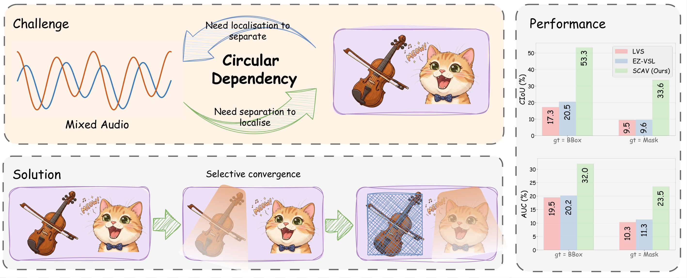
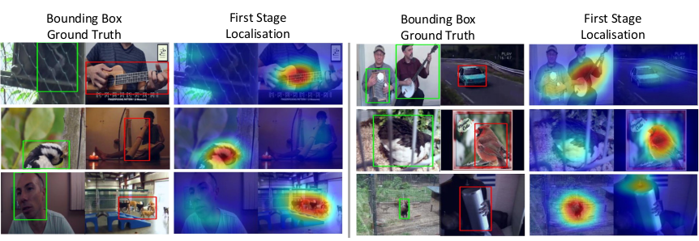
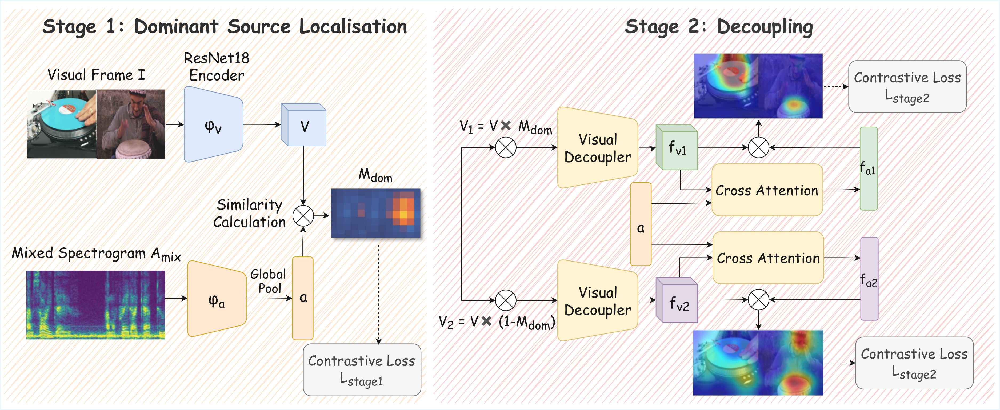
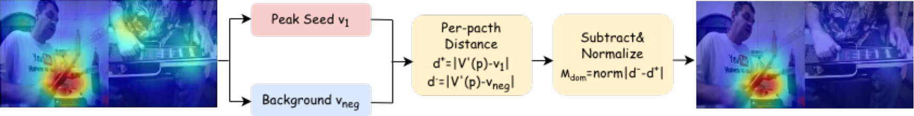
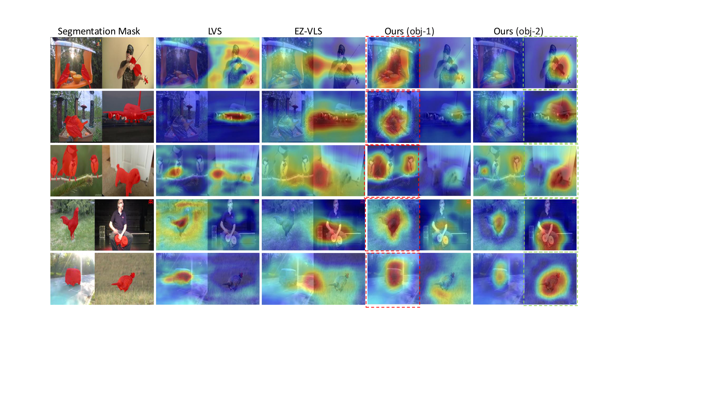
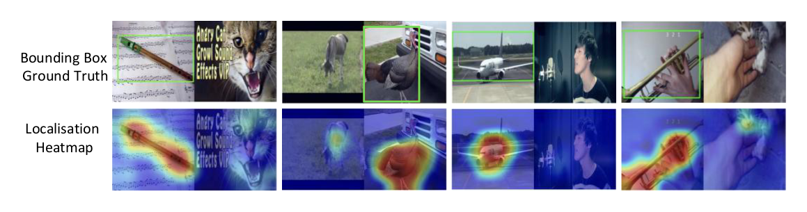
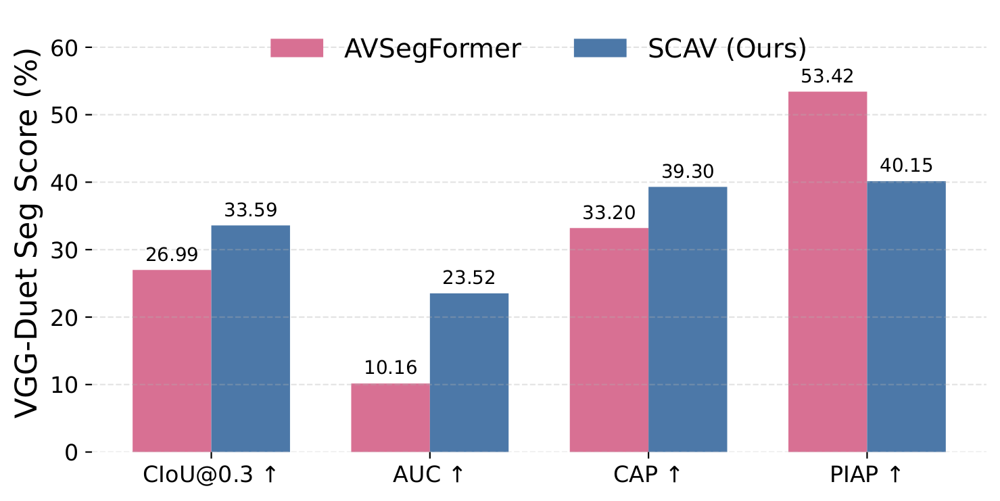
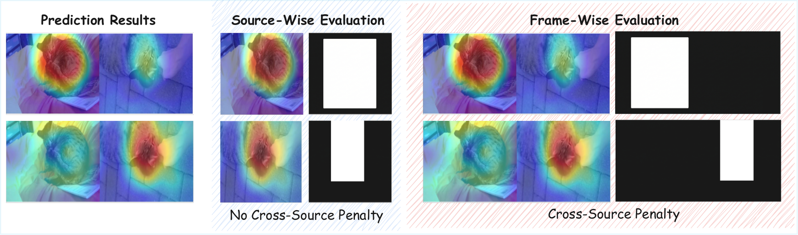

When a contrastive audio-visual model is trained on mixed audio with two sounding objects, it does not split its attention evenly. It spontaneously commits to one source — the one it becomes biased toward.

SCAV turns the one-source bias into a feature, not a bug: it uses the dominant source as a spatial prior to progressively uncover the subdominant one.

Contrastive learning on the mixed audio drives the model to converge on a single source, yielding a clean spatial prior Mdom — no annotations required.
Using Mdom as a prior, the model decouples the remaining audio-visual correspondence and localises the second source Msub in the same forward pass.

SCAV achieves the best performance among self-supervised methods across all benchmarks. All charts compare self-supervised methods only.

Existing benchmarks evaluate localisation against bounding-box annotations, which include substantial background and systematically inflate IoU. We introduce pixel-level segmentation masks for spatially-aligned evaluation.

Ground-truth bounding boxes encompass substantial background beyond the actual sounding region — a guitar neck, the space around a violin, empty corners of a frame.
Metrics computed against such boxes reward models that indiscriminately activate background pixels, paradoxically penalising precise localisation.
Our pixel-level masks eliminate this misalignment: every annotated pixel is a genuine sound-producing surface.


@inproceedings{hu2026scav,
title = {Whence the Voice? Self-supervised Dual-source Audio-Visual
Localisation via Selective Convergence},
author = {Han Hu and Dongheng Lin and Yuqi Hou and Haotian Li and
Hyung Jin Chang and Jianbo Jiao},
booktitle = {European Conference on Computer Vision (ECCV)},
year = {2026}
}